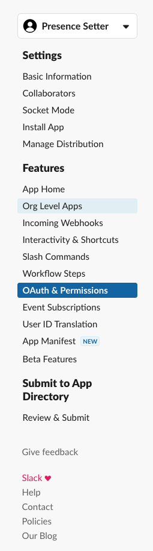

The Brief
| Note: I am on week two of running a HomeAssistant service so I’m still learning. If you have any suggestions or improvements please let me know. |
I want to be able to set my Slack presence when I’m working and “Away” when I’m not. I want this to be automated so I don’t have to remember to do it and I want the notifications muted when I’m not working.
The Solution
Previous Solution
The previous solution (which worked) was a Lambda running in AWS that was triggered by an EventBridge schedule to change my status at the required times. This worked but it was a bit of a pain to maintain and I wanted to move it to something that was a bit more “local” to me.
Home Assistant
I’ve been running Home Assistant for a few weeks now and I’m enjoying it. I’ve got a few automations set up and I’m slowly adding more. I’ve got a few smart plugs and lights that were previously controlled by Alexa and ported over to HA with very little pain.
Steps
The following steps are required to achieve this
- Create a Slack App
- Create a Slack Token
- Create and add a custom component to Home Assistant
- Set up the automation
Create a Slack App
Go to the Apps Management Console and click on “Create New App”. Give it a name and select the workspace you want to use it in.
Create a Slack Token
Go to the OAuth & Permissions section and scroll down to the Scopes section. Add the following scopes:

Set the scopes to the following;

Scroll back up, install to workspace and make a note of the token that is generated… it will start xoxp-
The api can be added to the secrets.yaml file in Home Assistant under api_key for use later.
Create and add a custom component to Home Assistant
Setting up a custom component so that it is available as a service in HA is fairly easy. The documentation is pretty good and there are plenty of examples to follow.
The first thing you need is to create a folder in your config directory called custom_components. This is where you will put your custom components.
Next, you need to create a folder for your component. In my case, I created a folder called slack_presence_setter and inside that folder, I created a file called __init__.py and the manifest.json. This is the file that will be loaded by HA when it starts up.
The manifest describes a custom component, the domain must match the name of the folder you’ve created.
{
"domain": "slack_presence_setter",
"name": "Slack Presence Setter",
"version": "0.1.0",
"iot_class": "local_push"
}
We then need some code that will run when the service is called.
import sys
import urllib3
import os
import logging
import datetime
logger = logging.getLogger(__name__)
logger.setLevel(logging.INFO)
def setup(hass, config):
"""Set up the Slack presence setter component."""
def update_snooze(api_key, http, snooze_enabled):
""" Update the snooze status """
if snooze_enabled:
r = http.request("GET", f"https://slack.com/api/dnd.setSnooze?num_minutes=6120",
headers={"Authorization": "Bearer " + api_key})
logger.info(f"Setting snooze for a long time")
if r.status != 200:
logger.error(f"Failed to set snooze")
else:
r = http.request("GET", f"https://slack.com/api/dnd.endDnd",
headers={"Authorization": "Bearer " + api_key})
logger.info(f"Ending snooze")
if r.status != 200:
logger.error(f"Failed to end snooze")
def update_status(api_key, http, new_presence):
""" Update the presence """
r = http.request("POST", f"https://slack.com/api/users.setPresence?presence={new_presence}",
headers={"Authorization": "Bearer " + api_key})
logger.info(f"Setting status to {new_presence}")
if r.status != 200:
logger.error(f"Failed to set the status to {new_presence}")
current_time = datetime.datetime.now().time()
name = "presence_setter"
logger.info("Cron execution " + name + " ran at " + str(current_time))
def handle_event(call):
http = urllib3.PoolManager()
status = call.data.get("status", "away")
api_key = call.data.get("api_key", None)
if not api_key:
logger.error("No api key available in the call data")
return
if status == "here":
update_status(api_key, http, "auto")
update_snooze(api_key, http, False)
elif status == "away":
update_status(api_key, http, "away")
update_snooze(api_key, http, True)
hass.services.register("slack_presence_setter",
"set_presence", handle_event)
return True
Breaking this down;
-
We have the outer function
setupthat is called by HA when it loads the component. This function registers the serviceset_presencewith HA. This function must returnTrueto tell Home Assistant that the component loaded successfully. -
The
handle_eventfunction is called when the service is called. It takes thecallobject as a parameter. This object contains the data that was passed to the service. In this case, it contains thestatusandapi_keythat we need to update the Slack status. -
The
update_statusfunction takes theapi_keyandhttpobjects and uses them to call the Slack API to update the status. It takes thenew_presenceas a parameter which is the status we want to set. When sending the presence status, the relevant choices areautofor on andawayfor …. away. -
The
update_snoozefunction takes theapi_keyandhttpobjects and uses them to call the Slack API to update the snooze status. It takes thesnooze_enabledas a parameter which is a boolean that tells us if we want to snooze or not. When snoozing, the relevant choices arednd.setSnoozefor on anddnd.endDndfor …. away.
Once you have this code in place you need to add an entry to configuration.yaml to include the component restart HA and the component should be loaded.
# rest of configuration.yaml
slack_presence_setter:
Setup the automation
There are two ways you can create an automation, through the UI or as a YAML file. I prefer the YAML file as it’s easier to see what’s going on and it’s easier to share.
In the automations.yaml file, I added the following:
- id: "set_slack_status_active"
alias: Slack Active
description: ""
trigger:
- platform: time_pattern
hours: 08
minutes: "55"
seconds: "00"
condition:
- condition: time
before: 09:00:00
after: 08:00:00
weekday:
- mon
- tue
- wed
- thu
- fri
action:
- service: slack_presence_setter.set_presence
data:
api_key: "!secret api_key"
status: here
mode: single
- id: "set_slack_status_inactive"
alias: Slack Inactive
description: ""
trigger:
- platform: time_pattern
hours: 17
minutes: "55"
seconds: "00"
condition:
- condition: time
before: 18:00:00
after: 17:00:00
weekday:
- mon
- tue
- wed
- thu
- fri
action:
- service: slack_presence_setter.set_presence
data:
api_key: "!secret api_key"
status: away
mode: single
This runs at 08:55 to set the status to active and 17:55 to set the status to inactive and disable notifications. This happens Monday to Friday.
One thing you might notice is the "!secret api_key" - this is telling Home Assistant to pull the api_key I’ve pasted into secrets.yaml in the root of the home assistant config folder.
Wrap Up
Now, at 8:55 and 17:55, my Slack status is set to active and inactive respectively. I’ve also set up a notification to tell me when the status is changed so I know it’s working.